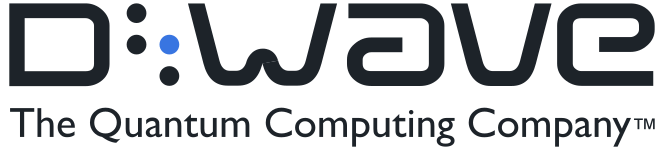

Ranglister Tech-hardware & optik D-Wave Quantum

D-Wave Quantum
23
15070100
Et blik på de samme fund, ikke en ny score. Sådan virker det
Modellen fandt flere alvorlige problemer. Det betyder ikke, at aktien vil falde.
Største fradrag
- Multipler mod egen historik og peers−34
- Margin−12
- Pengestrøm og udvanding−8
Styrker
- Nettokasse+2
- Ordrebeholdning+2
Sådan er scoren bygget op
Fra 100 til 23, trin for trin: point trækkes fra for forretningen, prisen og revnerne, lægges til for dokumenterede styrker, og så følger tre datajusteringer.
Start
Score
Hold musen over et trin eller vælg det for at se, hvad der drev det. Trin med fund åbner dem nedenfor.
Nøgletal
Pr. 6 nov. 2026. Analytikernes kursmål er ofte optimistiske; læs opsiden som et fingerpeg, ikke en prognose.
- Pris
- 10.68 USD
- Analytikernes mediankursmål
- 35.00 USD
- Opside til median
- +227.7%
- Analytikere
- 17
- Kursmålsinterval
- 18.36 – 43.00 USD
- 52-ugers ændring
- −66%
- P/E (historisk)
- n/a
- Forward P/E
- n/a
- PEG
- n/a
Fund
Hvert fradrag og hvert plus med sin kilde. Åbn et trin for at læse dem.
Forretning
Bliver virksomheden stærkere, ikke bare større? · 3 fund−23 af −30
- −12MarginDriftsresultatet er −170,6 mio. $ TTM på en omsætning på 12,4 mio. $ (driftsmargin −1.373 % mod −408 % i 2025); underskuddet er vokset hvert år fra −39 mio. $ i 2021. Bruttomarginen faldt fra 82,6 % (2025) til 64,2 % TTM. Underskuddet tæller her og ikke igen under ROIC.
- −6Vækstens kvalitetQ2-omsætningen var 3,1 mio. $, uændret fra Q2 2025, og TTM-omsætningen er faldet 44 %. Den tilbagevendende QCaaS-omsætning er kun 6,4 mio. $ TTM (6,8 mio. $ i 2024); væksten i 2025 kom fra et enkelt systemsalg. Q2-bookinger var kun 2,1 mio. $.
- −5KapitalallokeringQuantum Circuits blev købt i januar 2026 for 538,5 mio. $ (256 mio. $ kontant og 10,4 mio. aktier); 342,6 mio. $ blev bogført som goodwill. Likviditeten faldt fra 884 til 546 mio. $ på et halvt år, og P/TBV er 11,1.
Pris
Dagens multipler mod selskabets egen historik og dets sammenlignelige selskaber. · 1 fund−34 af −35
- −34Multipler mod egen historik og peersP/S 473 og EV/Sales 433 TTM ligger over hele egen historik (P/S 16–372 i 2022–2025), og forward P/S er 90 på analytikernes 2026-skøn (42,5 mio. $). Til sammenligning handles IonQ til ca. 72 gange omsætningen. Markedsværdien er 5,9 mia. $ for en forretning uden overskud i sigte (EPS-skøn 2027 −0,38 $).
Revner
Cash flow, kunder, gæld, insidere, guidance og det, der ligger bag hovedtallene. · 4 fund−15 af −35
- −8Pengestrøm og udvandingAktietallet er steget 40 % på et år (67 % i 2025) efter aktieudstedelser for 790 mio. $ i 2025, og FCF er −119 mio. $ TTM. Der er indleveret shelf-registreringer for ca. 330 mio. $, og CHIPS-aftalen (8/9) betales med nye aktier for 100 mio. $ til handelsministeriet.
- −3
- −2Teknologi og strategiskifteD-Wave har bygget på kvante-annealing, men har med Quantum Circuits-opkøbet skiftet til også at satse på gate-model, hvor IonQ, IBM og Google er langt fremme; målet om 100 logiske qubits ligger først i 2032.
- −2Makro og sentimentAktien er −52 % på 52 uger med beta 2,2, og 18 % af aktierne er solgt short.
Plus
Kun dokumenterede styrker. · 2 fund+4 af +15
- +2NettokasseNettokasse 498 mio. $ (546 mio. $ i likvider og obligationer mod 48 mio. $ gæld), ca. 8,5 % af markedsværdien, og ingen warrant-forpligtelser.
- +2OrdrebeholdningBookinger i første halvår 2026 på 35,5 mio. $ (+1.120 %) og resterende leveringsforpligtelser (RPO) på 40,7 mio. $, op 668 %; Forbes Global 2000-kunder stod for 47,7 % af Q2-omsætningen.
Forbehold
Det, scoren ikke fanger, eller hvor dataene er svage.
Underskud: driftsmargin −1.373 % og FCF −119 mio. $ TTM, så P/E og PEG er meningsløse. TTM-omsætningen (12,4 mio. $) er lav, fordi 2025 indeholdt et enkeltstående systemsalg (Advantage2 til Florida Atlantic University); omsætningen er klumpet. 10-Q for Q2 2026 nævner intet aktivt ATM-program (de gamle ATM-programmer blev afsluttet i 2025), men der er shelf-registreringer for ca. 330 mio. $ (januar 2026), og der udstedes aktier for 100 mio. $ til det amerikanske handelsministerium som del af CHIPS-aftalen. Insiderhandler er ikke undersøgt. Nordnet-listen viste kurs 0 USD; kurs fra stockanalysis (15,79 $ pr. 6/10).
Også i Tech-hardware & optik
De højeste scorer i samme branche.